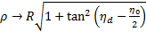

Journal of Automation and Control Research (JACR)
ISSN: 2368-6677

Volume 1, Year 2014 - Pages 31-37
DOI: 10.11159/jacr.2014.004
A Reactive Bearing Angle Only Obstacle Avoidance Technique for Unmanned Ground Vehicles
Jonathan Lwowski, Liang Sun, Roberto Mexquitic-Saavedra, Rajnikant Sharma, Daniel Pack
Department of Electrical and Computer Engineering, The University of Texas at San Antonio
One UTSA Circle, San Antonio, United States of America
kyx930@my.utsa.edu; liang.sun@utsa.edu; irn901@my.utsa.edu;
rajnikant.sharma@utsa.edu; Daniel.Pack@utsa.edu
Abstract - In this paper, we present a reactive, vision based obstacle avoidance technique for Unmanned Ground Vehicles (UGVs) navigating with only visual electro-optic sensors in an indoor environment without Global Positioning System (GPS) signals. The presented work is unique in that, to the best of our knowledge, there was no other bearing angle only obstacle avoidance technique for ground vehicles reported in the literature. A Lyapunov-based sliding mode controller maintains the bearing angle of the UGV from obstacles, using a real-time image processing method. The proposed technique is implemented and tested with a Pioneer robot in an indoor environment, and the results demonstrate its effectiveness.
Keywords: Reactive obstacle avoidance, Bearing angle only navigation technique, Unmanned systems, Sliding mode control.
© Copyright 2015 Authors This is an Open Access article published under the Creative Commons Attribution License terms. Unrestricted use, distribution, and reproduction in any medium are permitted, provided the original work is properly cited.
Date Received: 2014-05-29
Date Accepted: 2014-10-16
Date Published: 2014-10-20
1. Introduction
Over the past decade, an increasing number of unmanned systems have been used in both military and civilian applications such as surveillance, survey, and search and rescue missions. One of the enabling technologies of unmanned mobile systems is the ability to autonomously plan paths to navigate in an environment while avoiding obstacles (Goldman, 1994). While global path planning approaches are used to guide a UGV to a destination, a local path planning is necessary for a UGV to reactively avoid unexpected obstacles while following an overall trajectory generated by a global path planner.
Huang et al. (2006) presented a reactive obstacle avoidance method using a steering potential function. In their work, they seek to find a path with the lowest probability of a collision with an obstacle, but the method is heavily dependent on extensive parameter calibration beforehand. Minguez (2005) and Fulgenzi et al. (2007) used a laser range sensor to detect obstacles. In the latter work, they introduced the Probabilistic Velocity Obstacle (PVO) method, which estimates the probably of a collision with an obstacle and computes the optimal obstacle avoiding path for the UGV in a dynamic occupancy grid. Bandyophadyay et al. (2010) used a short range 2-D laser sensor to allow Autonomous Surface Craft (ASC) to reactively avoid obstacles. They used simple linear prediction based on the current history of obstacles and ASC dynamics to determine the best path for USV to take. Saunders and Beard (2008) proposed a reactive method for an unmanned aerial vehicle (UAV) to avoid local obstacles. The method requires an estimation of the range between a UAV and an obstacle along with computing the bearing angle. Sharma et al. (2012) applied a sliding mode controller using only the bearing angle for a UAV to avoid local obstacles in simulation, on which the current work is based. Lensar and Veloso (2003) presented an obstacle avoidance strategy using images from a single camera to estimate the range and angle to an obstacle with a known color. Michels et al. (2005) developed a monocular vision based method to avoid obstacles, incorporating a learning algorithm. The algorithm was trained using cameras labeled with ground-truth distances to the closest obstacle. Lagisettey et al. (2013) used a stereo camera system to detect static obstacles by using a stereo matching algorithm combined with a triangulation method.
To the best of our knowledge, the method presented in this paper is the first reported reactive bearing angle only obstacle avoiding controller for UGVs. The controller maintains the bearing angle of a UGV to an obstacle without the need for any range measurements nor any parameter calibrations. Conventional image processing methods were employed to obtain the bearing angle between a UGV and obstacles. A real-time Lyapunov-based sliding mode controller allows a UGV to reactively avoid unexpected obstacles by controlling the angular velocity of the UGV.
The rest of the paper is organized as follows. Section II presents the image processing technique used by a UGV to find the bearing angle between itself and an obstacle in a local coordinate frame. The proposed obstacle avoidance algorithm is described in Section III, followed by Section IV where we present experimental results. Concluding remarks are presented in the final section.
2. Extracting Obstacle Information
In this section, we describe the image processing algorithms used to compute the bearing angle between an obstacle and a UGV. The raw image is first smoothed using the following Gaussian operator
where and are pixel coordinates, and σ is the standard deviation of the Gaussian distribution function (Reinhard, 2010). The image is then converted from the red, blue and green (RGB) color space to the hue, saturation and value (HSV) color space, which contains additional information such as luma, color intensity, and chroma. Next, the image is thresholded based on a color (red is selected for our experiments). Figure 1 shows the original and processed images, respectively.
Once an image has gone through the conversion and the thresholding process, the moments of the resulting image are calculated by
where and denotes the pixel intensity at pixel location(Flusser and Suk, 2006) (Web-1). Next, the centroid of the moment, i.e., the center of obstacle mass, was calculated by
Finally, the bearing angle, , as shown in Figure 3(1), can be computed by
where is the focal length of a camera used. We hastily add that the image processing techniques we used are simple and that sophisticated methods exist in the literature. The simple techniques are used since the focus of the paper is the development of the bearing angle only controller.
3. Bearing Angle Only Based Obstacle Avoidance Technique
In this section, we describe the UGV controller, shown in Figure, made of two sub-controllers. The first sub-controller controls the UGV when no obstacle is detected, while the second sub-controller is the reactive obstacle avoidance unit activated when obstacles are detected. The first module generates simple straight line trajectories to move from one location to another. The second sub-controller, the focus of this paper, is constructed based on a Lyapunov-based sliding mode control algorithm.
As shown in Figure 3, letting and be the range and bearing angle from a UGV to the center of the obstacle, respectively, and be the range and bearing angle from a UGV to the nearest visible edge of the obstacle, respectively, and be the constant linear velocity of the UGV, the equations of motion of the system are given by (Saunders and Beard, 2008).
where is the heading angle of the UGV.
In this paper, we propose two additional variables,
and
, defined as the range and bearing angle to the center of the visible obstacle in the image, as shown in Figure 3(b). If the entire obstacle is captured by the camera, we have
and
. As a controller drives the UGV such that the obstacle is pushed to the edge of the camera view, the portion of an obstacle captured by the camera image shrinks, implying that
and
 . The objective is to develop a control law for , which is able to effectively regulate the UGV such that the image of the obstacle is moved appropriately to the edge of the field of view (FOV) of the camera. Inspired by Sharma et al. (2012), we developed the following sliding mode controller to make
converge to a specified angle without the range information.
. The objective is to develop a control law for , which is able to effectively regulate the UGV such that the image of the obstacle is moved appropriately to the edge of the field of view (FOV) of the camera. Inspired by Sharma et al. (2012), we developed the following sliding mode controller to make
converge to a specified angle without the range information.
where is a positive constant representing the minimum of , is a small constant preventing from being stuck at 0 when is zero, is the slope constant of a saturation function, denotes a saturation function and  represents the sign of the argument.
represents the sign of the argument.
The controller operates in the following manner. When an obstacle is captured by the camera, it assigns as the camera FOV, and s elects , i.e., , where is a small positive constant which represents the portion of the obstacle captured by the camera. When the entire obstacle is captured, and , it is easily shown that the controller (5) requires minimal changes in vehicle heading compared to the ones generated by the controller proposed by Sharma et al. (2012), generating a shorter UGV path.
As the captured portion of an obstacle decreases, approaches . From Figure 2(b) we can obtain
Thus, when we have
Then , similar to the equations derived by Saunders and Beard (2008).
For a differential-drive ground robot, the next task is to convert to the corresponding linear velocities of the left and right wheels. Consider a differential-drive robot is moving along a curve with a constant velocity and a turning rate , as shown in Figure 4, where ICC stands for the Instantaneous Center of Curvature, is the instantaneous radius of the curvature, and is the distance between the two wheels. Assuming that there is no side-slip on the wheels, the angular velocities of the robot center and the left and right wheels relative to the ICC should be the same, which also equals to the turning rate of the UGV. Letting and be the linear velocities of the left and right wheels, respectively, we have  Thus, the linear velocities of the two wheels of the UGV can be calculated by
Thus, the linear velocities of the two wheels of the UGV can be calculated by
4. Experimental Results
In this section, we present sample experimental results with corresponding analysis. The experiments were conducted in an indoor laboratory with normal office lighting. As shown in Figure 5, A Pioneer P3-DX ground robot, a Logitech-C615 camera with a field of view of approximately 74 degrees and a red cylinder (dimensions stated in Table 1) were used as the UGV, the visual sensor, and the obstacle, respectively. Table 1 shows the dimensions of the units we used in our experiments.
Table 1. Dimensions of UGV, Computer, Camera and Obstacle
|
|
Width (m) | Length (m) | Height (m) |
| UGV | 0.381 | 0.455 | 0.237 |
| Computer | 0.387 | 0.254 | 0.038 |
| Camera | 0.066 | 0.101 | 0.012 |
| Obstacle | 0.19 | 0.19 | 0.546 |
A Dell M4600 laptop computer (Intel Core i7 2.2GHz Quad Core 8GB RAM) onboard the Pioneer robot processed camera images and generated control inputs for the UGV. On average, the controller issued a new command every 0.33 seconds, processing a 620 x 480 color image and performing 44 multiplication or division operations, 21 addition or subtraction operations and 11 trigonometric functions. For all experiments, we assume that obstacles consist of a single distinctive color. Scenarios of multiple obstacles are also discussed later in this section. For our experiments, the robot assumes that its starting location is (0, 0) in a global coordinate frame. The nominal linear velocity of the robot, V, is a selected as 0.07 m/s . . Focal length, , , , were selected as .424 m, 5 m, .1, .3 and 35 degrees, respectively. Figures 6 and 7 show scenarios in which the UGV was trying to reach its destination at (0, 2.7) m with obstacles at (0.3, 1.8) m and (-0.3, 1.8) m, respectively. In Figure 8, the UGV was attempting to reach a destination at (-1.2, 2.7) m with an obstacle located at (-0.6, 1.2) m. Figure 9 shows a similar setup as in Figure 8, but with a destination of (1.2, 2.7) m and the obstacle is located at (0.6, 1.2) meters.

Experiments with multiple obstacles were also conducted. Figures 10 and 11 show the resulting UGV paths when multiple obstacles are detected on the UGV's way to a destination. If multiple obstacles are detected simultaneously by the camera in the path of the UGV, as in Figure 10, the image processing algorithm proposed in Section II considers the area expanded by those obstacles as a single large obstacle. Therefore, even though the space between obstacles may be large enough for the UGV to pass through, the UGV will not consider it as an option. In Figure 11, the first obstacle was placed at (0.3, 0.9) m. The second obstacle was dropped at (-0.1, 3.1) m in real-time only after the UGV successfully avoided the first obstacle. The resulting path shows that the UGV is able to reactively avoid unexpected obstacles and still reach its destination. From the results shown in Figures 6-10, it can be seen empirically that the proposed controller successfully commands the UGV to reach its destination without any collisions with obstacles.
5. Conclusion
This paper presents one of the first bearing-angle-only-based nonlinear controllers for mobile robots to reactively avoid obstacles in a GPS denied environment. Experimental results demonstrate the validity of the proposed controller. In future work, we plan to integrate the bearing-angle-only controller with a simultaneous localization and mapping (SLAM) algorithm in order to obtain better estimates of the UGV's locations in a global coordinate system. We also plan on improving the image processing technique to isolate individual obstacles and to expand the types of obstacles it can detect.
Acknowledgments
The research was supported by the McNair Scholars Program. The authors acknowledge the contributions of Negar Farmani, Azima Mottaghi, and Rajdeep Dutta for their constructive feedback on the earlier version of the controller and the experimental results.
References
[1] Bandyophadyay T., Sarcione L., Hover F. (2010). "A Simple Reactive Obstacle Avoidance Algorithm and Its Application in Singapore Harbor." Field and Service Robotics, 455 — 465. View Article
[2] Flusser J., Suk T. (2006) Rotation Moment Invariants for Recognition of Symmetric Objects, Image Processing, 3784 — 3790. View Article
[3] Fulgenzi C., Spalanzani A., Laugier C. (2007). Dynamic Obstacle Avoidance in uncertain environment combining PVOs and Occupancy Grid, IEEE International Conference on Robotics and Automation, 1610 — 1616. View Article
[4] Goldman J. (1994). Path Planning Problems and Solutions. Aerospace and Electronics Conference, 105 — 108. View Article
[5] Huang J., Fajen B., Fink J., Warren W. (2006) Visual navigation and obstacle avoidance using a steering potential function. Robotics and Autonomous Systems Conference, 288 — 289. View Article
[6] Lagisetty R., Phillip N. K., Padhi R., Bhat M. S. (2013). Object Detection and Obstacle Avoidance for Mobile Robot using Stereo Camera, IEEE International Conference on Control Applications, S. 886 — 891. View Article
[7] Lenser S., Veloso M. (2003). Visual Sonar: Fast Obstacle Avoidance Using Monocular Vision, IEEE International Conference on Intelligent Robots and Systems, 605 — 610 View Article
[8] Michels J., Saxena A., Y. Ng. A. (2005), High Speed Obstacle Avoidance using Monocular Vision and Reinforcement Learning, International Conference on Machine Learning. View Article
[9] Minguez J. (2005). Integration of Planning and Reactive Obstacle Avoidance in Autonomous Sensor-Based Navigation. Intelligent Robots and Systems, 2486 — 2492. View Article
[10] Reinhard E. (2010). High dynamic range imaging: Acquisition, Display, and Image-Based Lighting. View Book
[11] Saunders J., Beard R. (2008). Reactive Vision Based Obstacle Avoidance with Camera Field of View Constraints. AIAA Guidance, Navigation and Control Conference and Exhibit, 2008 — 7250. View Article
[12] Sharma R., Saunders J., Beard W. (2012). Reactive Path Planning for Micro Air Vehicles Using Bearing Only Measurements. Journal of Intelligent and Robotic System, 65, 409 — 416. View Article
Web Sites:
[13] Web-1: http://www.homepages.inf.ed.ac.uk/rbf/CVonline/l consulted 20 June. 2013.